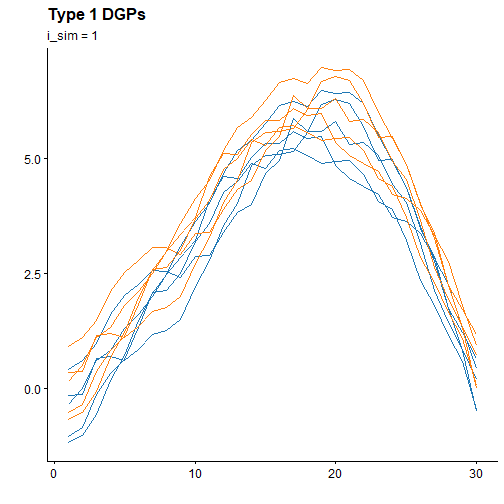
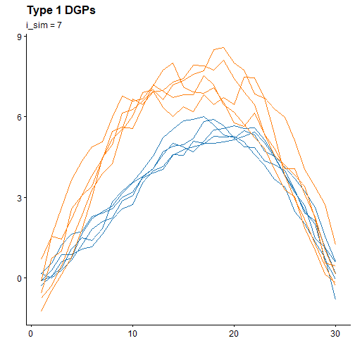
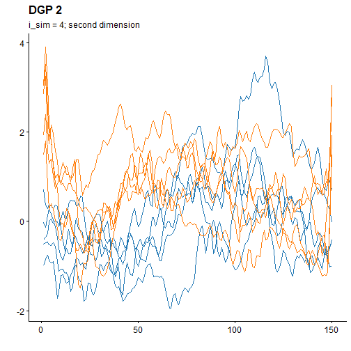
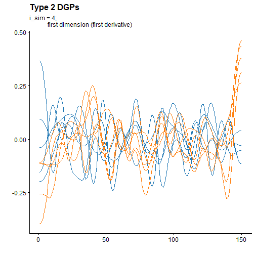
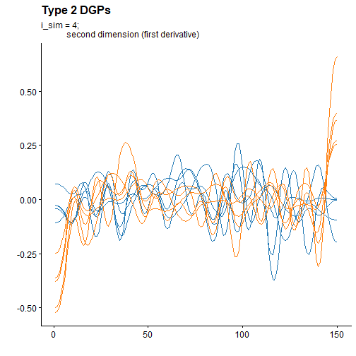
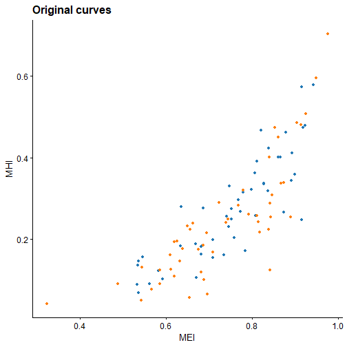
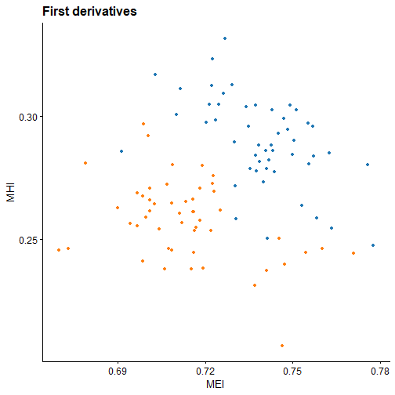
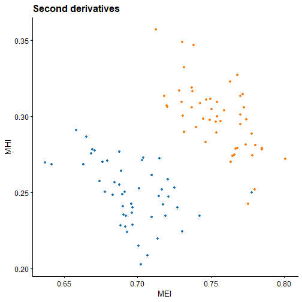

ehymet package goal
The ehymet package
(Epigraph-Hypograph based
methodologies for functional data) is an R
package designed to extend popular multivariate data analysisi
methodologies to functional data using various indices. The package
introduces the epigraph and hypograph
indices, along with their modified versions for functional datasets in
one or multiple dimensions. These indices transform a functional dataset
into a multivariate one, enabling the application of existing
multivariate data analysis methods.
More information about the theory behind these methodologies can found in the following papers:
Belén Pulido, Alba M. Franco-Pereira, Rosa E. Lillo (2023). “A fast epigraph and hypograph-based approach for clustering functional data.” Statistics and Computing, 33, 36. doi: 10.1007/s11222-023-10213-7
Belén Pulido, Alba M. Franco-Pereira, Rosa E. Lillo (2023). “The epigraph and the hypograph indices as useful tools for clustering multivariate functional data.” doi: 10.48550/arXiv.2307.16720
DGPs introduced in the package
ehymet introduces two functions which generate different
Data Generation Processes (DGPs) for functional data in one or multiple
dimension. The first function, sim_model_ex1, generate DGPs
in one dimension as originally described by (Flores, Lillo, and Romo 2018). The second
function, sim_model_ex2, produces DGPs in both one and two
dimensions first introduced by (Martino et al.
2019).
These functions are useful for simulating functional data to test statistical methods or to understand the behavior of different models under controlled conditions. Each of the two functions display different DGPs depending on the given parameters, each of them with diferent characteristics.
Type 1 DGPs
The first set of DGPs is generated by function
sim_model_ex1, which produces eight different DGPs, each
corresponding to a different value of i_sim. Here’s a
breakdown of how each DGP is generated and how the function works:
Parameters
- n: The number of curves to generate for each group. By default, this is set to 50 per group, resulting in a total of 100 curves.
- p: The number of grid points at which the curves are evaluated over the interval \([0, 1]\). The default is 30 grid points.
-
i_sim: An integer between 1 and 8 that specifies
which model to use for generating the curves in the second group. The
first group of curves is generated in the same way for all values of
i_sim.
Function breakdown
The first group of functions is generated by a Gaussian process \[X_1(t)=E_1(t)+e(t),\] where \(E_1(t)=30t^{ \frac{3}{2}}(1-t)\) is the mean function and \(e(t)\) is a centered Gaussian process with covariance matrix \[ Cov(e(t_i),e(t_j))=0.3 \exp\left(-\frac{\lvert t_i-t_j \rvert}{0.3}\right).\]
The second group of functions \(X_i\) are obtained from the first one by
perturbing the generation process. Different values of
i_sim generate different curves.
For i_sim values of 1, 2, and 3, the curves in the
second group exhibit changes in the mean while the covariance matrix
remains unchanged. The changes in the mean increase in magnitude as
i_sim increases.
i_sim = 1: \(X_i(t)=X_1(t)+0.5.\)
i_sim = 2: \(X_i(t)=X_1(t)+0.75.\)
i_sim = 3: \(X_i(t)=X_1(t)+1.\)
For i_sim 4 and 5, the curves in the second group are
obtained by multiplying the covariance matrix by a constant.
i_sim = 4: \(X_i(t)=E_1(t)+2 \ e(t).\)
i_sim = 5: \(X_i(t)=E_1(t)+0.25 \ e(t).\)
For i_sim = 6, the curves in the second group are
obtained by adding to \(E_1(t)\) a
centered Gaussian process \(h(t)\)
whose covariance matrix is given by \[
Cov(h(t_i),h(t_j))=0.5 \exp (-\frac{\lvert
t_i-t_j\rvert}{0.2})\].
- i_sim = 6: \(X_i(t)=E_1(t)+ \ h(t).\)
For i_sim 7 and 8, the curves in the second group are
obtained by a different mean function \(E_2(t)=30t{(1-t)}^2\).
- i_sim = 7: \(X_8(t)=E_2(t)+ h(t).\)
- i_sim = 8: \(X_9(t)=E_2(t)+ e(t).\)
Output
The function returns a data matrix of size \(2n \times p\), where the first \(n\) rows contain the curves from the first
group, and the next \(n\) rows contain
the curves from the second group, generated according to the selected
value of i_sim.
Usage
To simulate the curves, we can follow these steps:
n <- 5
curves <- sim_model_ex1(n = n, i_sim = 1)
dim(curves)
#> [1] 10 30This code generated 10 curves over the interval [0,1] with 30 grid
points, using i_sim=1
Also, we can plot them. To do so, we are going to load external packages. This is just an example of how to plot the curves, but the end user can do it the way they want.
library(tidyr)
library(dplyr)
library(ggplot2)
library(ggsci)
library(cowplot)
plot_curves <- function(curves, title = "", subtitle = "") {
data <- as.data.frame(curves) |>
mutate(curve_id = row_number())
n <- dim(curves)[1] / 2
data_long <- data |>
pivot_longer(
cols = -curve_id,
names_to = "point",
values_to = "value"
) %>%
mutate(
point = as.numeric(sub("V", "", point)),
group = if_else(curve_id %in% 1:n, 1, 2)
)
ggplot(data_long, aes(x = point, y = value, group = curve_id, color = as.factor(group))) +
geom_line() +
labs(
title = title,
subtitle = subtitle,
color = "Group",
x = "",
y = ""
) +
scale_color_d3() +
theme_half_open() +
theme(legend.position = "none")
}
plot_curves(curves, title = "Type 1 DGPs", subtitle = "i_sim = 1")
The case for i_sim = 7 has the following graph
representation:

Clear differences can be seen between both plots. We leave it up to the end user to experiment as they see fit with the simulations.
Type 2 DGPs
The second set of DGPs is generated by function
sim_model_ex2, which produces four different DGPs, each
corresponding to a different value of i_sim. The first
two DGPs are in one dimension, while the remaining two DGPs are
two-dimensions functional datasets. Here’s a breakdown of how each DGP
is generated and how the function works:
Parameters
- n: The number of curves to generate for each group. By default, this is set to 50 per group, resulting in a total of 100 curves.
- p: The number of grid points at which the curves are evaluated over the interval \([0, 1]\). The default is 150 grid points.
- i_sim: An integer between 1 and 4. 1 and 2 for one-dimensional functional data and 3 and 4 for the multidimensional case.
Function breakdown
For the one-dimensional case the first group of functions is generated by \[X_{1}(t)=E_3(t)+ A(t),\] where \(E_3(t)=t(1-t)\) is the mean function, and \[A(t) = \sum_{k=1}^{100} Z_k\sqrt{\rho_k}\theta_k(t),\] with \(\{Z_k, k=1,...,100\}\) being independent standard normal variables, and \(\{ \rho_k,k\geq 1 \}\) a positive real numbers sequence defined as \[\rho_k = \left\{ \begin{array}{lll} \frac{1}{k+1} & if & k \in \{1,2,3\}, \\ \frac{1}{{(k+1)}^2} & if & k \geq 4, \end{array} \right. \] in such a way that the values of \(\rho_k\) are chosen to decrease faster when \(k\geq 4\) in order to have most of the variance explained by the first three principal components. The sequence \(\{\theta_k, k\geq 1\}\) is an orthonormal basis of \(L^2(I)\) defined as \[\theta_k(t) = \left\{ \begin{array}{lllll} I_{[0,1]}(t) & if & k=1, & \\ \sqrt{2}\sin{(k\pi t)}I_{[0,1]}(t) & if & k \geq 2,\\ & & k \ even,\\ \sqrt{2}\cos{((k-1)\pi t)}I_{[0,1]}(t) & if & k \geq 3,\\ & & k \ odd, \end{array} \right. \] where \(I_A(t)\) stands for the indicator function of set \(A\).
The second group of data is generated as follows, depending on the
value of i_sim:
i_sim = 1: \(X_{i}(t)=E_4(t)+ A(t),\) where \(E_4(t)=E_2(t)+\displaystyle \sum_{k=1}^3\sqrt{\rho_k}\theta_k(t).\)
i_sim = 2: \(X_{i}(t)=E_5(t)+ A(t),\) where \(E_5(t)=E_2(t)+\displaystyle \sum_{k=4}^{100}\sqrt{\rho_k}\theta_k(t).\)
For the two-dimensional case the first group of
functions is generated by \[\mathbf{X}_{1}(t)=\mathbf{E}_6(t)+ B(t),\]
where \(\mathbf{E}_6(t)=
\begin{pmatrix}
t(1-t)\\
4t^2(1-t)
\end{pmatrix}\) is the mean function of this process, and \[\mathbf{B}(t) = \sum_{k=1}^{100}
\mathbf{Z}_k\sqrt{\rho_k}\theta_k(t),\] where \[\mathbf{E}_6(t)=
\begin{pmatrix}
t(1-t)\\
4t^2(1-t)
\end{pmatrix}\] is the mean function of this process, \(\{\mathbf{Z}_k, k=1,...,100\}\) are
independent bivariate normal random variables, with mean \(\mathbf{\mu = 0}\) and covariance matrix
\[\Sigma=
\begin{pmatrix}
1 & 0.5\\
0.5 & 1
\end{pmatrix}.\] The second group of data is generated as
follows, depending on the value of i_sim:
i_sim = 3: \(X_{i}(t)=\mathbf{E}_7(t)+ B(t),\) where \(\mathbf{E}_7(t)=\mathbf{E}_6(t)+\mathbf{1}\displaystyle \sum_{k=1}^3\sqrt{\rho_k}\theta_k(t),\) is the mean function of this process, where \(\mathbf{1}\) represents a vector of 1s.
i_sim = 4: \(X_{i}(t)=\mathbf{E}_8(t)+ B(t),\) where \(\mathbf{E}_8(t)=\mathbf{E}_6(t)+\mathbf{1}\displaystyle \sum_{k=4}^{100}\sqrt{\rho_k}\theta_k(t).\)
Output
The function returns for the one-dimensional case
(i_sim=1,2) a data matrix of size \(2n \times p\). The output for the
two-dimensional case (i_sim=3,4)is an
array of dimensions \(2n \times p \times
2\).
Usage
This function generates functional curves in one dimension for values
of i_sim equal to 1 and 2, and functional datasets in two
dimensions for values of i_sim equal to 3 and 4. Here, we
would like to point out how to simulate a multivariate functional
dataset with i_sim = 3 or i_sim = 4.
n <- 5
curves <- sim_model_ex2(n = n, i_sim = 4)
dim(curves)
#> [1] 10 150 2As can be seen, now we don’t have a matrix but a 3-dimensional array. We are going to plot the first dimension:

And now the second dimension:

For the sake of visualization, we can also obtain the derivatives of
the curves using the funspline function, which is an
internal function of the ehymet package. It can be used
with ehymet:::.
funspline_result <- ehymet:::funspline(curves)
deriv <- funspline_result$deriv
deriv2 <- funspline_result$deriv2The plot for first dimension of the derivative is the following one:

And for the second dimensions:

We can observe a clear overlapping between first derivatives curves on both dimensions.
Indices computation
ehymet provides the implementation of the epigraph and
the hypograph index, both in one and multiple dimensions. The function
to generate the indices is generate_indices and it can
compute:
- Epigraph Index (EI)
- Hypograph Index (HI)
- Modified Epigraph Index (MEI)
- Modified Hypograph Index (MHI)
The indices parameter can be specified to calculate a
subset of the total indices, but by default it calculates all of them.
Indices for one-dimensional functional data or for data in more
dimensions are calculated depending of the size of the input array.
Let’s try this function to generate indices with multidimensional
data generated with sim_model_ex2:
n <- 50
curves <- sim_model_ex2(i_sim = 4, n = n)
dim(curves)
#> [1] 100 150 2And now compute the indices for the multidimensional data:
indices_mult <- generate_indices(curves)We can check that all the indices are computed for each curve and for its first and second derivative:
names(indices_mult)
#> [1] "dtaEI" "ddtaEI" "d2dtaEI" "dtaHI" "ddtaHI"
#> [6] "d2dtaHI" "dtaMEI" "ddtaMEI" "d2dtaMEI" "dtaMHI"
#> [11] "ddtaMHI" "d2dtaMHI"We can also take a quick look to the generated indices:
head(indices_mult, 3)
#> dtaEI ddtaEI d2dtaEI dtaHI ddtaHI d2dtaHI dtaMEI ddtaMEI
#> 1 0.99 0.99 0.99 0.01 0.01 0.01 0.8068 0.7372667
#> 2 0.99 0.99 0.99 0.01 0.01 0.01 0.7458 0.7348667
#> 3 0.98 0.99 0.99 0.01 0.01 0.01 0.5360 0.7300000
#> d2dtaMEI dtaMHI ddtaMHI d2dtaMHI
#> 1 0.6912667 0.2582667 0.3046000 0.2504667
#> 2 0.6760667 0.2315333 0.2957333 0.2698667
#> 3 0.6956000 0.1463333 0.2895333 0.2426000Now, for the sake of comparison, let’s see what happens if we calculate the indices separately for each dimension and check the first few rows:
indices_dim1 <- generate_indices(curves[, , 1])
indices_dim2 <- generate_indices(curves[, , 2])
head(indices_dim1, 3)
#> dtaEI ddtaEI d2dtaEI dtaHI ddtaHI d2dtaHI dtaMEI ddtaMEI
#> 1 0.94 0.99 0.99 0.03 0.01 0.01 0.4260000 0.5051333
#> 2 0.91 0.99 0.99 0.01 0.01 0.01 0.3576667 0.5132667
#> 3 0.95 0.99 0.99 0.01 0.01 0.01 0.3458000 0.5030667
#> d2dtaMEI dtaMHI ddtaMHI d2dtaMHI
#> 1 0.4685333 0.4360000 0.5151333 0.4785333
#> 2 0.4755333 0.3676667 0.5232667 0.4855333
#> 3 0.4674667 0.3558000 0.5130667 0.4774667
head(indices_dim2, 3)
#> dtaEI ddtaEI d2dtaEI dtaHI ddtaHI d2dtaHI dtaMEI ddtaMEI
#> 1 0.99 0.99 0.99 0.04 0.01 0.01 0.6290667 0.5267333
#> 2 0.99 0.99 0.99 0.01 0.01 0.01 0.6096667 0.5073333
#> 3 0.95 0.99 0.99 0.01 0.01 0.01 0.3265333 0.5064667
#> d2dtaMEI dtaMHI ddtaMHI d2dtaMHI
#> 1 0.4632000 0.6390667 0.5367333 0.4732000
#> 2 0.4604000 0.6196667 0.5173333 0.4704000
#> 3 0.4607333 0.3365333 0.5164667 0.4707333One difference that is readily apparent is, for example, for “dtaMHI”. Let’s take a look at it:
head(data.frame(
dim1 = unname(indices_dim1["dtaMHI"]),
dim2 = unname(indices_dim2["dtaMHI"]),
mult = unname(indices_mult["dtaMHI"])
), 5)
#> dim1 dim2 mult
#> 1 0.4360000 0.6390667 0.2582667
#> 2 0.3676667 0.6196667 0.2315333
#> 3 0.3558000 0.3365333 0.1463333
#> 4 0.3744000 0.7898000 0.3180000
#> 5 0.3574000 0.5160000 0.1821333Let’s plot MHI vs MEI for both the original curves and both first and second derivatives:



For the original curves, no clear separation is evidenced. However, both in the first and second derivatives we see that the groups are clearly differentiated. This may indicate that using the MEI and MHI indices computed for the first or second derivatives could yield great results in clustering problems.